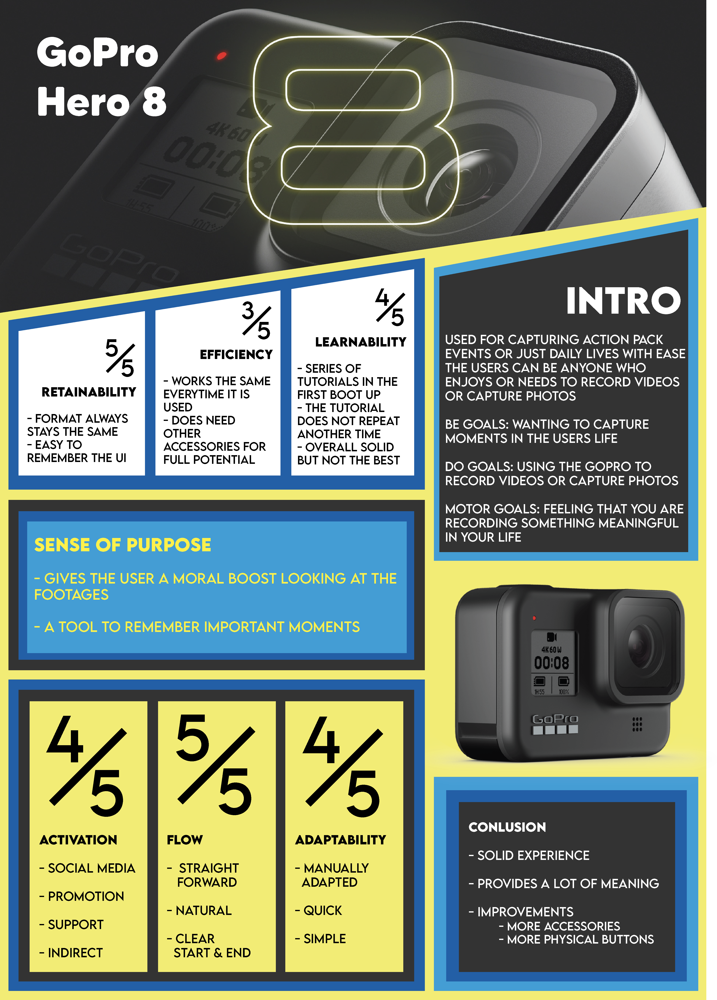
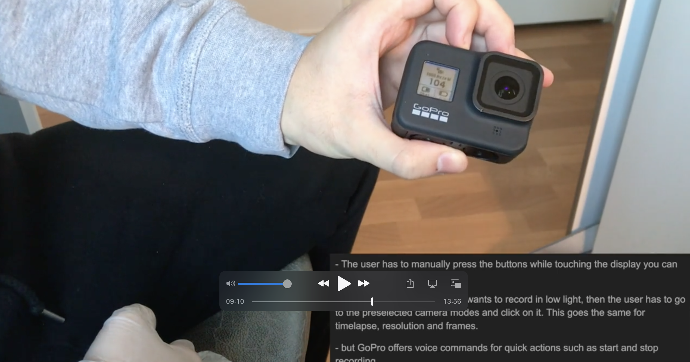

UX Projects
IUX (Introduction to User Experience) Product Review Video


This was one of our first university projects. Individually, students were given the chance to choose their own
product which had a digital experience for a user. Our task was to choose three useability and engadement factors
and one meaning factor for a user experience. With our chosen factors we were supposed to review the quality of
the chosen product's user expereince. Then the review was to be made into a video for the submition. The product
I chose was the GoPro Hero 8 Black. Within the video, I review the quality of UX of the product with the following factors:
Learnability, Efficiency, Retainability, Activation, Flow, Adaptability and Sense of Purpose.
Process
Step 1: Research
During this phase, I learned about the different factors of an UX.
Step 2: Test
Here I chose the factors to focus on for the video and tested the products.
Step 3: Plan
With all the data gathered, I planned for the script and the recording.
Step 4: Record
I started recording the shots and the audio for the video.
Step 5: Edit
After recording everything, I started to edit until everything was together.